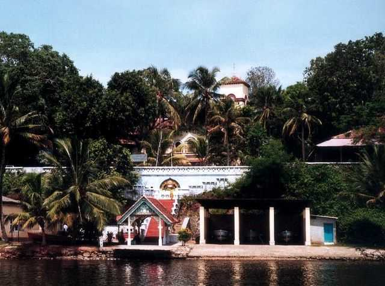

Kollam is a beautiful place in South India, which fascinates you with its multitude of tourist attractions. Such was the fame of Kollam once as a trade center that everyone from the Romans, Arabs, Chinese, the Portuguese, Dutch, and British traders were clamoring to get their hands on the spices and the cashew crops of the region. Have a look at some of the best Kollam tourist places for a surreal vacation in Kerala, truly God’s Own Country. Best Season to Visit Kollam: October to March is Best Season to Visit Kollam Kollam is a city in the state of Kerala, on India's Malabar Coast. It’s known as a trade hub and for its beaches, like lively Kollam and secluded Thirumullavaram. Sardar Vallabhbhai Patel Police Museum has artifacts tracing the history of the police force. Nearby, Ashtamudi Lake is a gateway to the Kerala backwaters, a network of waterways rich with vegetation. The striped 1902 Tangasseri Lighthouse has ocean views.
DESTINATIONS Must See
|

Jatayu Earth centre
Built to promote mythology and adventure tourism, the tourism centre boasts of 6D theatre, an audio-visual digital room, cable car and ayurvedic cave resort.
Learn more
Palaruvi Falls
A gorgeous waterfall located on the Kollam-Shencottah Road at Palaruvi is lying at an altitude of 300 feet;
Learn more

Thevally Palace
A place of great historic importance, Thevally Palace is situated on the banks of Ashtamude Lake.
Learn more
Punalur
The town's name translates into 'town of water', the river Kallada flows through the city of Punalur.
Learn more